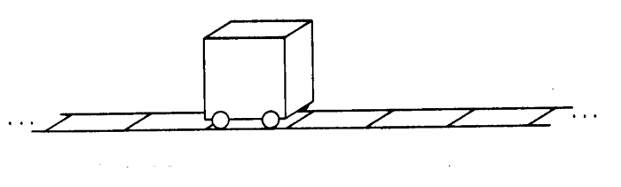

A virtual machine is a program that acts like a computer.
It simulates the instructions of a processor along with a few other hardware components, allowing it to perform arithmetic, read and write to memory, and interact with I/O devices, just like a physical computer. Most importantly, it can understand a machine language which you can use to program it.
A bedrock abstraction level is found in every human system. No recoverable failure, no matter how catastrophic, will ever demand intelligent intervention below it. When an application crashes, it might leave behind a core dump but never a "logic gate dump" and certainly not a "transistor dump." Logic gates and transistors lie well below the bedrock abstraction level of any ordinary computer. ~
To experiment with computing from first principles, have a look at the paper computer.


Incoming: tools uxn devlog